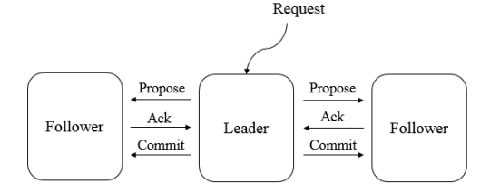
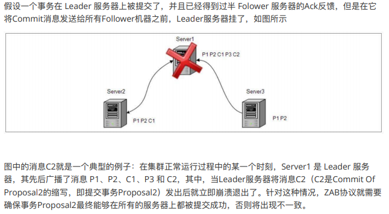
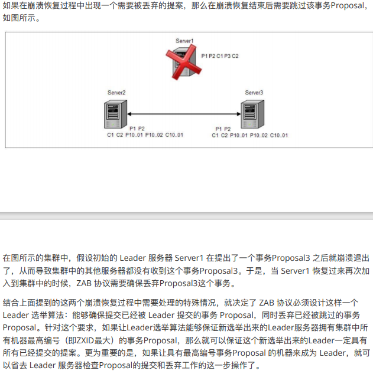
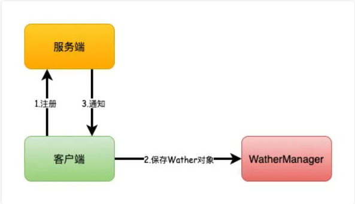
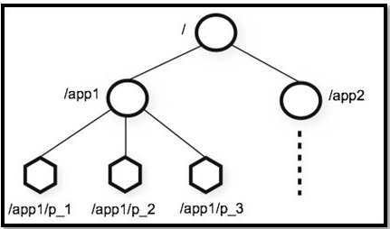

Welcome to yanliang's notes.
[TOC]
谈下你对 Zookeeper 的认识？
ZooKeeper 是一个开源的分布式协调服务。它的设计目标是将那些复杂且容易出错的分布式一致性服务封装起来，构成一个高效可靠的原语集，并以一系列简单易用的接口提供给用户使用。
原语： 操作系统或计算机网络用语范畴。是由若干条指令组成的，用于完成一定功能的一个过程。具有不可分割性·即原语的执行必须是连续的，在执行过程中不允许被中断。
ZooKeeper 为我们提供了高可用、高性能、稳定的分布式数据一致性解决方案，通常被用于实现诸如数据发布/订阅、负载均衡、命名服务、分布式协调/通知、集群管理、Master 选举、分布式锁和分布式队列等功能。
另外，ZooKeeper 将数据保存在内存中，性能是非常棒的。 在“读”多于“写”的应用程序中尤其地高性能，因为“写”会导致所有的服务器间同步状态。（“读”多于“写”是协调服务的典型场景）。
特点：
- 顺序一致性： 从同一客户端发起的事务请求，最终将会严格地按照顺序被应用到 ZooKeeper 中去。
- 原子性： 所有事务请求的处理结果在整个集群中所有机器上的应用情况是一致的，也就是说，要么整个集群中所有的机器都成功应用了某一个事务，要么都没有应用。
- 单一系统映像 ： 无论客户端连到哪一个 ZooKeeper 服务器上，其看到的服务端数据模型都是一致的。
- 可靠性： 一旦一次更改请求被应用，更改的结果就会被持久化，直到被下一次更改覆盖。
谈下你对 ZAB 协议的了解？
ZAB（ZooKeeper Atomic Broadcast 原子广播） 协议是为分布式协调服务 ZooKeeper 专门设计的一种支持崩溃恢复的原子广播协议。
在 ZooKeeper 中，主要依赖 ZAB 协议来实现分布式数据一致性，基于该协议，ZooKeeper 实现了一种主备模式的系统架构来保持集群中各个副本之间的数据一致性。
ZAB 协议包括两种基本的模式，分别是
- 崩溃恢复 ：崩溃恢复主要包括两部分：Leader选举 和 数据恢复。当整个服务框架在启动过程中，或是当 Leader 服务器出现网络中断、崩溃退出与重启等异常情况时，ZAB 协议就会进入恢复模式并选举产生新的Leader服务器。当选举产生了新的 Leader 服务器，同时集群中已经有过半的机器与该Leader服务器完成了状态同步之后，ZAB协议就会退出恢复模式。其中，所谓的状态同步是指数据同步，用来保证集群中存在过半的机器能够和Leader服务器的数据状态保持一致。
- 消息广播 ：当集群中已经有过半的Follower服务器完成了和Leader服务器的状态同步，那么整个服务框架就可以进入消息广播模式了。 当一台同样遵守ZAB协议的服务器启动后加入到集群中时，如果此时集群中已经存在一个Leader服务器在负责进行消息广播，那么新加入的服务器就会自觉地进入数据恢复模式：找到Leader所在的服务器，并与其进行数据同步，然后一起参与到消息广播流程中去。
消息广播
ZAB协议的消息⼴播过程使⽤原⼦⼴播协议，类似于⼀个⼆阶段提交过程，针对客户端的事务请求， Leader服务器会为其⽣成对应的事务Proposal，并将其发送给集群中其余所有的机器，然后再分别收集 各⾃的选票，最后进⾏事务提交。

在ZAB的⼆阶段提交过程中，移除了中断逻辑，所有的Follower服务器要么正常反馈Leader提出的事务 Proposal，要么就抛弃Leader服务器，同时，ZAB协议将⼆阶段提交中的中断逻辑移除意味着我们可以 在过半的Follower服务器已经反馈Ack之后就开始提交事务Proposal了，⽽不需要等待集群中所有的 Follower服务器都反馈响应，但是，在这种简化的⼆阶段提交模型下，⽆法处理因Leader服务器崩溃退 出⽽带来的数据不⼀致问题，因此ZAB采⽤了崩溃恢复模式来解决此问题，另外，整个消息⼴播协议是 基于具有FIFO特性的TCP协议来进⾏⽹络通信的，因此能够很容易保证消息⼴播过程中消息接受与发送 的顺序性。
在整个消息⼴播过程中，Leader服务器会为每个事务请求⽣成对应的Proposal来进⾏⼴播，并且在⼴播 事务Proposal之前，Leader服务器会⾸先为这个事务Proposal分配⼀个全局单调递增的唯⼀ID，称之 为事务ID（ZXID），由于ZAB协议需要保证每个消息严格的因果关系，因此必须将每个事务Proposal按 照其ZXID的先后顺序来进⾏排序和处理。
具体的过程：在消息⼴播过程中，Leader服务器会为每⼀个Follower服务器都各⾃分配⼀个单独的队 列，然后将需要⼴播的事务 Proposal 依次放⼊这些队列中去，并且根据 FIFO策略进⾏消息发送。每⼀ 个Follower服务器在接收到这个事务Proposal之后，都会⾸先将其以事务⽇志的形式写⼊到本地磁盘中 去，并且在成功写⼊后反馈给Leader服务器⼀个Ack响应。当Leader服务器接收到超过半数Follower的 Ack响应后，就会⼴播⼀个Commit消息给所有的Follower服务器以通知其进⾏事务提交，同时Leader ⾃身也会完成对事务的提交，⽽每⼀个Follower服务器在接收到Commit消息后，也会完成对事务的提 交。
崩溃恢复
ZAB协议的这个基于原⼦⼴播协议的消息⼴播过程，在正常情况下运⾏⾮常良好，但是⼀旦在Leader服 务器出现崩溃，或者由于⽹络原因导致Leader服务器失去了与过半Follower的联系，那么就会进⼊崩溃 恢复模式。在ZAB协议中，为了保证程序的正确运⾏，整个恢复过程结束后需要选举出⼀个新的Leader 服务器，因此，ZAB协议需要⼀个⾼效且可靠的Leader选举算法，从⽽保证能够快速地选举出新的 Leader，同时，Leader选举算法不仅仅需要让Leader⾃身知道已经被选举为Leader，同时还需要让集 群中的所有其他机器也能够快速地感知到选举产⽣出来的新Leader服务器。
根据上⾯的内容，我们了解到，ZAB协议规定了如果⼀个事务Proposal在⼀台机器上被处理成功，那么 应该在所有的机器上都被处理成功，哪怕机器出现故障崩溃。接下来我们看看在崩溃恢复过程中，可能 会出现的两个数据不⼀致性的隐患及针对这些情况ZAB协议所需要保证的特性。
zookeeper 的两个保证：
- ZAB协议需要确保那些已经在Leader服务器上提交的事务最终被所有服务器都提交

- ZAB协议需要确保丢弃那些只在Leader服务器上被提出的事务

数据同步
完成Leader选举之后，在正式开始⼯作（即接收客户端的事务请求，然后提出新的提案）之前， Leader服务器会⾸先确认事务⽇志中的所有Proposal是否都已经被集群中过半的机器提交了，即是否完 成数据同步。
下⾯我们就来看看ZAB协议的数据同步过程。
所有正常运⾏的服务器，要么成为 Leader，要么成为 Follower 并和 Leader 保持同步。Leader服务器 需要确保所有的Follower服务器能够接收到每⼀条事务Proposal，并且能够正确地将所有已经提交了的 事务Proposal应⽤到内存数据库中去。具体的，Leader服务器会为每⼀个Follower服务器都准备⼀个队 列，并将那些没有被各Follower服务器同步的事务以Proposal消息的形式逐个发送给Follower服务器， 并在每⼀个Proposal消息后⾯紧接着再发送⼀个Commit消息，以表示该事务已经被提交。等到 Follower服务器将所有其尚未同步的事务 Proposal 都从 Leader 服务器上同步过来并成功应⽤到本地数 据库中后，Leader服务器就会将该Follower服务器加⼊到真正的可⽤Follower列表中，并开始之后的其 他流程。
Zookeeper如何进行Leader选举的？
zookeeper 会在如下两种场景进行 leader 选举：
- 服务器启动阶段
- 服务运行期间， Leader 服务器出现网络中断、崩溃退出与重启等异常情况时
zxid
在ZAB协议中，每个消息都被赋予了一个zxid，zxid全局唯一。zxid有两部分组成：高32位是epoch，低32位是epoch内的自增id，由0开始。每次选出新的Leader，epoch会递增，同时zxid的低32位清0。这其实像极了咱们古代封建王朝的君主更替，每一次的江山易主，君王更替。
状态
- LOOKING：Leader选举状态，正在寻找Leader
- FOLLOWING：当前节点是Follower。与Leader服务器保持同步状态
- LEADING：当前节点是Leader，作为主进程领导状态。
服务器启动时期的Leader选举
若进⾏Leader选举，则⾄少需要两台机器，这⾥选取3台机器组成的服务器集群为例。在集群初始化阶段，当有⼀台服务器Server1启动时，其单独⽆法进⾏和完成Leader选举，当第⼆台服务器Server2启动时，此时两台机器可以相互通信，每台机器都试图找到Leader，于是进⼊Leader选举过程。选举过程如下：
(1) 每个Server发出⼀个投票 由于是初始情况，Server1（假设myid为1）和Server2假设myid为2）都会将⾃⼰作为Leader服务器来 进⾏投票，每次投票会包含所推举的服务器的myid和ZXID，使⽤(myid, ZXID)来表示，此时Server1的 投票为(1, 0)，Server2的投票为(2, 0)，然后各⾃将这个投票发给集群中其他机器
(2) 接受来⾃各个服务器的投票 集群的每个服务器收到投票后，⾸先判断该投票的有效性，如检查是否是本轮投票、是否来⾃ LOOKING状态的服务器。
(3) 处理投票 针对每⼀个投票，服务器都需要将别⼈的投票和⾃⼰的投票进⾏PK，PK规则如下
优先检查ZXID。ZXID⽐较⼤的服务器优先作为Leader。
如果ZXID相同，那么就⽐较myid。myid较⼤的服务器作为Leader服务器。
现在我们来看Server1和Server2实际是如何进⾏投票处理的。对于Server1来说，它⾃⼰的投票是 （1，0），⽽接收到的投票为（2，0）。⾸先会对⽐两者的ZXID，因为都是0，所以⽆法决定谁是 Leader。接下来会对⽐两者的myid，很显然，Server1发现接收到的投票中的myid是2，⼤于⾃⼰，于 是就会更新⾃⼰的投票为（2，0），然后重新将投票发出去。⽽对于Server2来说，不需要更新⾃⼰的投票
(4) 统计投票 每次投票后，服务器都会统计所有投票，判断是否已经有过半的机器接收到相同的投票信息。对于 Server1和Server2服务器来说，都统计出集群中已经有两台机器接受了（2，0）这个投票信息。这⾥我 们需要对“过半”的概念做⼀个简单的介绍。所谓“过半”就是指⼤于集群机器数量的⼀半，即⼤于或等于 （n/2+1）。对于这⾥由3台机器构成的集群，⼤于等于2台即为达到“过半”要求。那么，当Server1和Server2都收到相同的投票信息（2，0）的时候，即认为已经选出了Leader。
(5) 改变服务器状态 ⼀旦确定了 Leader，每个服务器就会更新⾃⼰的状态：如果是 Follower，那么就变更为 FOLLOWING，如果是Leader，那么就变更为LEADING。
服务器运⾏时期的Leader选举
在ZooKeeper集群正常运⾏过程中，⼀旦选出⼀个Leader，那么所有服务器的集群⻆⾊⼀般不会再发⽣ 变化。也就是说，Leader服务器将⼀直作为集群的Leader，即使集群中有⾮Leader机器挂了或是有 新机器加⼊集群也不会影响Leader。但是⼀旦Leader所在的机器挂了，那么整个集群将暂时⽆法对外 服务，⽽是进⼊新⼀轮的Leader选举。服务器运⾏期间的Leader选举和启动时期的Leader选举基本过 程是⼀致的。 我们还是假设当前正在运⾏的 ZooKeeper 机器由 3 台机器组成，分别是 Server1、Server2和 Server3，当前的Leader是Server2。假设在某⼀个瞬间，Leader挂了，这个时候便开始了Leader选 举。
(1) 变更状态 Leader挂后，余下的⾮Observer服务器都会将⾃⼰的服务器状态变更为LOOKING，然后开始进⼊ Leader选举过程。
(2) 每个Server会发出⼀个投票 在运⾏期间，每个服务器上的ZXID可能不同，此时假定Server1的ZXID为123，Server3的ZXID为122； 在第⼀轮投票中，Server1和Server3都会投⾃⼰，产⽣投票(1, 123)，(3, 122)，然后各⾃将投票发送给 集群中所有机器。
(3) 接收来⾃各个服务器的投票，与启动时过程相同
(4) 处理投票。与启动时过程相同，此时，Server1将会成为Leader
(5) 统计投票。与启动时过程相同
(6) 改变服务器的状态。与启动时过程相同
ZAB 算法和 Paxos 算法的区别
联系：
① 都存在⼀个类似于Leader进程的⻆⾊，由其负责协调多个Follower进程的运⾏。
② Leader进程都会等待超过半数的Follower做出正确的反馈后，才会将⼀个提议进⾏提交。
③ 在ZAB协议中，每个Proposal中都包含了⼀个epoch值，⽤来代表当前的Leader周期，在Paxos 算法中，同样存在这样的⼀个标识，名字为Ballot。
区别：
Paxos算法中，新选举产⽣的主进程会进⾏两个阶段的⼯作，第⼀阶段称为读阶段，新的主进程和 其他进程通信来收集主进程提出的提议，并将它们提交。第⼆阶段称为写阶段，当前主进程开始提出⾃ ⼰的提议。
ZAB协议在Paxos基础上添加了同步阶段，此时，新的Leader会确保 存在过半的Follower已经提交 了之前的Leader周期中的所有事务Proposal。这⼀同步阶段的引⼊，能够有效地保证Leader在新的周 期中提出事务Proposal之前，所有的进程都已经完成了对之前所有事务Proposal的提交。
总的来说，ZAB协议和Paxos算法的本质区别在于，两者的设计⽬标不太⼀样，ZAB协议主要⽤于 构建⼀个⾼可⽤的分布式数据主备系统，⽽Paxos算法则⽤于构建⼀个分布式的⼀致性状态机系统
说说Wather监听机制和它的原理？
Zookeeper可以提供分布式数据的发布/订阅功能，依赖的就是Wather监听机制。
客户端可以向服务端注册Wather监听，服务端的指定事件触发之后，就会向客户端发送一个事件通知。
他有几个特性：
- 一次性：一旦一个Wather触发之后，Zookeeper就会将它从存储中移除
- 客户端串行：客户端的Wather回调处理是串行同步的过程，不要因为一个Wather的逻辑阻塞整个客户端
- 轻量：Wather通知的单位是WathedEvent，只包含通知状态、事件类型和节点路径，不包含具体的事件内容，具体的时间内容需要客户端主动去重新获取数据
主要流程如下：
- 客户端向服务端注册Wather监听
- 保存Wather对象到客户端本地的WatherManager中
- 服务端Wather事件触发后，客户端收到服务端通知，从WatherManager中取出对应Wather对象执行回调逻辑

有可能会出现数据不一致的问题吗？
查询不一致
因为Zookeeper是过半成功即代表成功，假设我们有5个节点，如果123节点写入成功，如果这时候请求访问到4或者5节点，那么有可能读取不到数据，因为可能数据还没有同步到4、5节点中，也可以认为这算是数据不一致的问题。
解决方案可以在读取前使用sync命令。
leader未发送proposal宕机
这也就是数据同步说过的问题。
leader刚生成一个proposal，还没有来得及发送出去，此时leader宕机，重新选举之后作为follower，但是新的leader没有这个proposal。
这种场景下的日志将会被丢弃。
leader发送proposal成功，发送commit前宕机
如果发送proposal成功了，但是在将要发送commit命令前宕机了，如果重新进行选举，还是会选择zxid最大的节点作为leader，因此，这个日志并不会被丢弃，会在选举出leader之后重新同步到其他节点当中。
zookeeper 数据模型
ZooKeeper 数据模型采用层次化的多叉树形结构，每个节点上都可以存储数据，这些数据可以是数字、字符串或者是二级制序列。并且。每个节点还可以拥有 N 个子节点，最上层是根节点以“/”来代表。每个数据节点在 ZooKeeper 中被称为 znode，它是 ZooKeeper 中数据的最小单元。并且，每个 znode 都一个唯一的路径标识。
强调一句：ZooKeeper 主要是用来协调服务的，而不是用来存储业务数据的，所以不要放比较大的数据在 znode 上，ZooKeeper 给出的上限是每个结点的数据大小最大是 1M。

znode 4种类型
我们通常是将 znode 分为 4 大类：
- 持久（PERSISTENT）节点 ：一旦创建就一直存在即使 ZooKeeper 集群宕机，直到将其删除。
- 临时（EPHEMERAL）节点 ：临时节点的生命周期是与 客户端会话（session） 绑定的，会话消失则节点消失 。并且，临时节点只能做叶子节点 ，不能创建子节点。
- 持久顺序（PERSISTENT_SEQUENTIAL）节点 ：除了具有持久（PERSISTENT）节点的特性之外， 子节点的名称还具有顺序性。比如
/node1/app0000000001、/node1/app0000000002。 - 临时顺序（EPHEMERAL_SEQUENTIAL）节点 ：除了具备临时（EPHEMERAL）节点的特性之外，子节点的名称还具有顺序性。
znode 数据结构
每个 znode 由 2 部分组成:
- stat ：状态信息
- data ： 节点存放的数据的具体内容
1 | [zk: 127.0.0.1:2181(CONNECTED) 6] get /dubbo |
Stat 中记录了这个 znode 的三个相关的版本：
- dataVersion ：当前 znode 节点的版本号
- cversion ： 当前 znode 子节点的版本
- aclVersion ： 当前 znode 的 ACL 的版本。
| znode 状态信息 | 解释 |
|---|---|
| cZxid | create ZXID，即该数据节点被创建时的事务 id |
| ctime | create time，即该节点的创建时间 |
| mZxid | modified ZXID，即该节点最终一次更新时的事务 id |
| mtime | modified time，即该节点最后一次的更新时间 |
| pZxid | 该节点的子节点列表最后一次修改时的事务 id，只有子节点列表变更才会更新 pZxid，子节点内容变更不会更新 |
| cversion | 子节点版本号，当前节点的子节点每次变化时值增加 1 |
| dataVersion | 数据节点内容版本号，节点创建时为 0，每更新一次节点内容(不管内容有无变化)该版本号的值增加 1 |
| aclVersion | 节点的 ACL 版本号，表示该节点 ACL 信息变更次数 |
| ephemeralOwner | 创建该临时节点的会话的 sessionId；如果当前节点为持久节点，则 ephemeralOwner=0 |
| dataLength | 数据节点内容长度 |
| numChildren | 当前节点的子节点个 |
ZooKeeper 集群为啥最好奇数台？
ZooKeeper 集群在宕掉几个 ZooKeeper 服务器之后，如果剩下的 ZooKeeper 服务器个数大于宕掉的个数的话整个 ZooKeeper 才依然可用。假如我们的集群中有 n 台 ZooKeeper 服务器，那么也就是剩下的服务数必须大于 n/2。先说一下结论，2n 和 2n-1 的容忍度是一样的，都是 n-1，大家可以先自己仔细想一想，这应该是一个很简单的数学问题了。 比如假如我们有 3 台，那么最大允许宕掉 1 台 ZooKeeper 服务器，如果我们有 4 台的的时候也同样只允许宕掉 1 台。 假如我们有 5 台，那么最大允许宕掉 2 台 ZooKeeper 服务器，如果我们有 6 台的的时候也同样只允许宕掉 2 台。
综上，何必增加那一个不必要的 ZooKeeper 呢？
如果作为注册中心，Zookeeper 和Eureka、Consul、Nacos有什么区别？
| Nacos | Eureka | Consul | Zookeeper | |
|---|---|---|---|---|
| 一致性协议 | CP+AP | AP | CP | CP |
| 健康检查 | TCP/HTTP/MYSQL/Client Beat | Client Beat | TCP/HTTP/gRPC/Cmd | Keep Alive |
| 负载均衡策略 | 权重/ metadata/Selector | Ribbon | Fabio | — |
| 雪崩保护 | 有 | 有 | 无 | 无 |
| 自动注销实例 | 支持 | 支持 | 不支持 | 支持 |
| 访问协议 | HTTP/DNS | HTTP | HTTP/DNS | TCP |
| 监听支持 | 支持 | 支持 | 支持 | 支持 |
| 多数据中心 | 支持 | 支持 | 支持 | 不支持 |
| 跨注册中心同步 | 支持 | 不支持 | 支持 | 不支持 |
| SpringCloud集成 | 支持 | 支持 | 支持 | 不支持 |
| Dubbo集成 | 支持 | 不支持 | 不支持 | 支持 |
| K8S集成 | 支持 | 不支持 | 支持 | 不支持 |